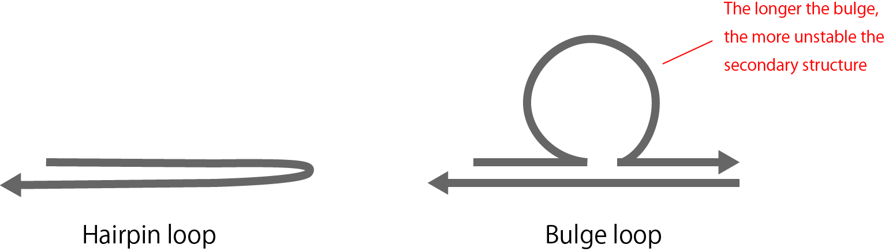
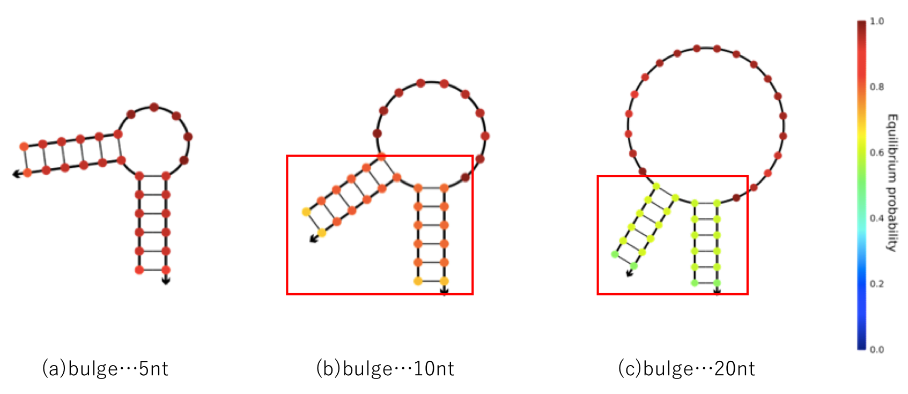
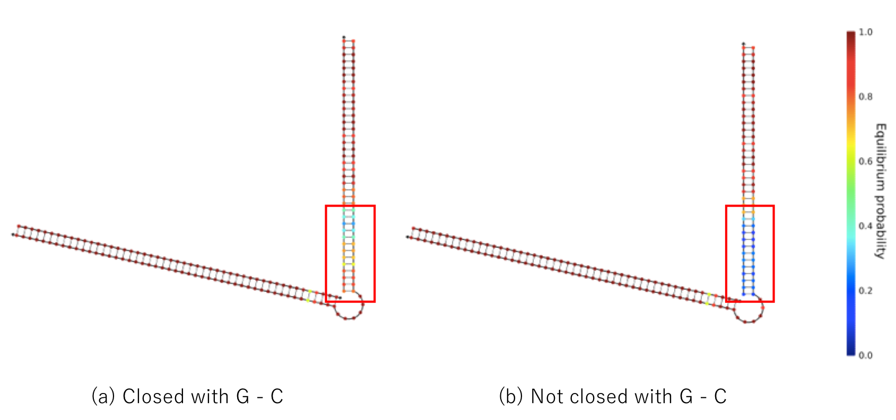

Discussion
DNA Design Innovation - (1) Application of Mismatched Base Pair
We checked up and understood the feature of mismatched base pair, and then we gave the application example. In designing DNA, it is necessary to calculate DNA’s behavior with accuracy and design base sequence as our idea, but the more complicated the DNA system is, the more frequently DNA do not behave as our expectation. Today, in order to solve the problem, the method that we use special secondary structure, such as hairpin loop or bulge loop (Figure 1), is used generally.

{kind=link}
Figure 1 : Special Secondary Structures
However, we have to take not only benefits but also defects caused by using the method into our consideration, for example of the defects of bulge loop, the longer base sequence of a part of bulge is, the more unstable secondary structure gets to be (Figure 2).

{kind=link}
Figure 2 : The Structure of Bulge Loop
Therefore we need to use them for different purposes in accordance to the goal. We use the new method ‘Mismatched base pair’ to control DNA as accurately as possible. Mismatched GT base pair can solve a variety of problems. The primary advantage of mismatched base pair
is high simpleness of the mechanism. In other methods, we need a knowledge and skills to keep down unintentional behaviors of DNA. In addition, we have to redesign the circulation many times as it becomes more complicated. However, by mismatched
base pair, all we have to do is to pick up all parts where could not behave as our expectation and to add each mismatched base pair in the circulation. But there are defects in using mismatched base pair, one of which is taking a very long time to introduce it to experiments.
Accordingly, we have no choice but to try a lot of patterns of mismatched base pair. Another one is that there are no simulation tools that can simulate using mismatched base pair now. Since mismatched base pairs can be applied in various applications, the
development of mismatched base pair technology is thought to greatly contribute to the development of molecular robotics.
DNA Design Innovation - (2) Strength of DNA Binding
We mentioned the strength of DNA binding. In this project we used the T7 promoter sequence, but intentionally added G-C bonds at both ends of the chain because G-C bonds are stronger in binding strength than A-T bonds, and double-stranded DNA is stable among Watson Crick base pairs. Especially in this time we decided that this kind of ingenuity is necessary because the binding force of double stranded DNA weakens by adding mismatched base pair. Figure 3 compares the case where the G-C bond is added to the edge and the case where it is not added. From Figure 3, we found that double-stranded DNA is more stable by G-C bond. This prevents unintentional behavior due to instability of the secondary structure.

{kind=link}
Figure 3 : The Strength of DNA Binding
DNA Design Innovation - (3) Delay of the Seesaw Gate
We used a seesaw gate this time to delay the output time. The most common way to delay the reaction rate of DNA is to change the length of the toehold. Recently, regulation of reaction rate by mismatched base pair has also been reported. Compared to those,
there is one very big advantage to adjusting the time by this seesaw gate, that adjustment can be done just by changing the density of the threshold gate. In the case of toehold or mismatched base pair, it is necessary to determine the reaction
rate at the time of base sequence design, therefore, if we want to adjust the time according to the application, we think that it is efficient to use the seesaw gate.
Future
Cancer is the most highly mortality disease among all diseases. In recent years, cancer treatment is advanced from various directions such as robot assisted under endoscope surgery and pinpoint irradiation. A system using our proposed DNA is one of them. The best advantage when using DNA is that it is highly compatible with living bodies. This research aims to move our DNA circuit in e.coli, and if this is successful, this field will develop greatly. We believe that the realization of cancer treatment with DNA artificial structures will be even closer. We hope that our research will contribute even a little to the development of cancer treatment in the future.
ELSI
We have been studying to suppress cellular activity by removing ATP in cells using DNA circuit using polymerase reaction. This is aimed at suppressing the activity of malignant cells such as cancer cells in medical treatment in the future. However, if the target of suppression of activity is normal cells, there is a possibility that the human body may be affected. With current knowledge, it is thought that normal cells have a large abundance of ATP in malignant cells and there is little influence of reaction, but in the future the performance of the reaction improves and circuits that remove all ATP. If it can be done, if it is targeted wrong, there is a possibility that the human body may be negative affected. Therefore, it is necessary to take measures against the range of the influence of the circuit. In addition, although this circuit is actually incorporated into E. coli and experiments are carried out, there is no example where the DNA circuit is mounted on living cells. Therefore, when designing a DNA circuit that acts harmfully in the living body and mounting it on a living cell, serious influence may be exerted on people and other animals. Therefore, when applying this research in the clinical setting, it is necessary to consider the influence on cells other than the target cells of the reaction and the risk of the circuit itself.